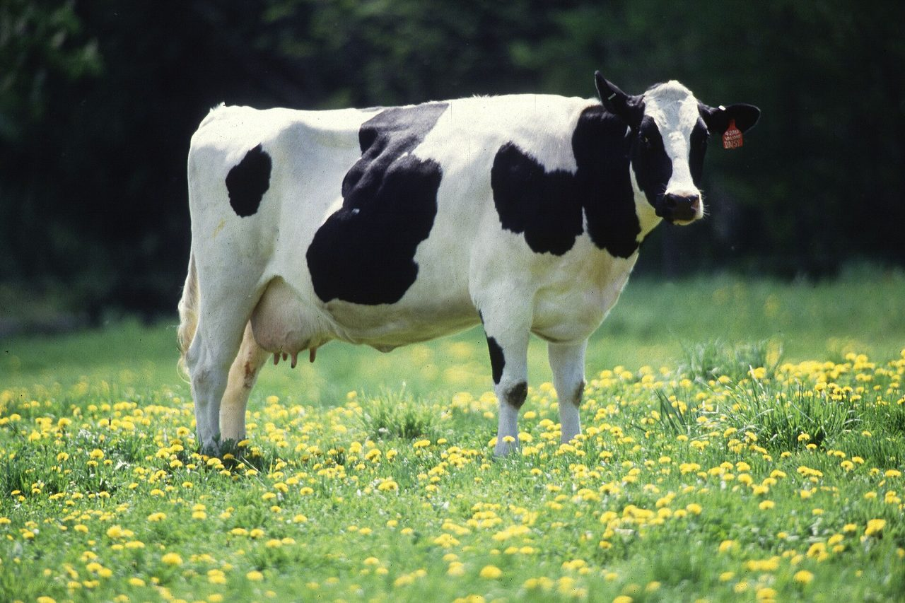

Frequently Asked Questions

Questions
About BioPRYN® and Pregnancy Testing
What is BioPRYN?
BioPRYN is a blood pregnancy test for cattle, bison, sheep and goats, and has specific appeal for the commercial U.S. dairy industry because it delivers fast, accurate, safe and economical pregnancy diagnostic results.
Do you test goats and sheep?
Yes. Goats and sheep test from the same 2cc blood draw as cattle, from 30 days after breeding, on the Small Ruminant Pregnancy Test Form. See goat and sheep testing.
What does the test name stand for?
The test's name is a partial acronym for "Pregnant Ruminant Yes/No." This specific test uses ELISA technology, which produces fast results.
How does BioPRYN detect pregnancies?
BioPRYN evaluates the blood, more specifically the serum or plasma, of ruminants for a protein called Pregnancy Specific Protein B (PSPB). PSPB is produced by the placenta, so pregnant animals will have the protein in their blood. This makes the test more accurate than earlier attempts at pregnancy diagnosis that evaluated blood or milk for progesterone or other hormones that can occur in normally cycling animals. The test uses enzyme-linked immunosorbent assay (ELISA) technology for processing, which contributes to its low cost and fast turnaround.
How early in a pregnancy can animals be tested with BioPRYN?
Adult cattle can be tested for pregnancy 28 or more days following insemination; virgin heifers can be tested 25 days or more after insemination. Animals that are detected open can then be immediately returned to time-saving re-synchronization protocols using products such as Estroplan and Gonabreed.
Can heifers at a custom grower be tested?
Yes. Heifers test from 25 days after breeding. The grower's crew draws the samples and ships them, and the report goes wherever you mark on the form. See heifer testing.
What is the accuracy of BioPRYN?
The test is more than 99 percent accurate in detecting open cows, with less than 1 percent showing false-open (false-negative) results. Correct open detection is very important when giving Estroplan or other synchronizing drugs.
What does a "recheck" result mean?
BioPRYN reports each animal as pregnant, open, or recheck. A recheck means the reading fell between the two ranges: a pregnancy in trouble, an animal sampled too early, or a cow still too close to calving. Dr. Pearson reads every plate himself and will tell you what the recheck means for that animal and when to sample her again.
What are the advantages of using blood testing versus other methods of pregnancy diagnosis?
- Producers incur less cost using BioPRYN compared to rectal palpation by a veterinarian, and much less cost than ultrasound.
- Blood testing allows producers to diagnose pregnancy at least 7 days sooner than rectal palpation, with no risk of damaging the fetus.
- Cows diagnosed open can then be re-bred sooner, resulting in tighter calving intervals, more calves born per year, and higher lifetime milk production, because cows achieve peak milk more often.
- The test is more convenient for dairies, because on-farm personnel can draw samples without locking up cows or waiting for the veterinarian to arrive, and then ship the blood samples.
- Eliminating rectal palpation also frees up the veterinarian to concentrate on higher-level issues with the dairy's management team.
How long does it take to receive the test results?
Tests are run Monday through Thursday, and results are reported on Thursday. Samples that reach the lab by Wednesday go out in that week's Thursday report, faxed or emailed back to the dairy. If you need results earlier, call ahead and we can usually arrange it.
We do not rush the assay. The test itself needs roughly 48 hours from laboratory setup to reporting, and accuracy is the priority here, not turnaround. Every result is read by the veterinarian who runs the lab.
How should blood samples be prepared and shipped?
Dairy personnel need to draw blood samples from the tail vein, an easy-to-learn procedure. See how to tail bleed a cow. Blood samples of at least 2 mL per animal should be collected in individual vacuum tubes and labeled with each animal's identification number. It is important to draw samples using individual, disposable needles to avoid cross-contamination between animals. Tubes containing blood samples should not be opened, and should be packed in a well-padded box to avoid breakage. They do NOT need to be packed in ice. Samples may stay in transit for several days without compromising the results of the test. Fastest results, however, are achieved when samples are shipped via Federal Express, UPS overnight, DHL, Airborne Express, U.S. Postal Service overnight, or another overnight carrier.
Do the samples need ice?
Pregnancy blood tubes do not. Ear notches and BVD blood samples do: refrigerate them, pack them with ice packs, and get them to the lab within 48 hours of collection.
How soon after calving can a cow be tested?
Cows should be at least 90 days since calving as well as 28 or more days from breeding, so the protein from the last pregnancy has cleared.
What tubes should I use?
Red-top tubes, 3cc or 5cc, with at least 2cc of blood in each. We can ship tubes and needles with your first order; see the supplies list.
Do I need a veterinarian to draw the samples?
No. Your own crew can draw from the tail vein. See how to tail bleed a cow, which walks through it one step at a time.
Do you test bison?
Yes. The assay is validated in bison, at the same price as cattle, on the cattle and bison form.
How do I pay?
Include payment with your samples; checks are payable to ADDC. The amount is on the submission form.
How are results sent?
By email, fax or phone, whichever you mark on the form, on Thursday for samples that reach the lab by Wednesday.
Do you test for Johnes, Leukosis or Mycoplasma?
Yes, as disease monitoring programs set up with Dr. Pearson. Call (715) 653-2201 so the right samples go in the box.
What if a tube breaks in transit?
Call the lab. We will tell you which animals need a new sample, and there is no charge for a sample we could not run.
Learn how you can adopt exciting new technologies to increase your herd's profitability through improved reproductive management. Call us at (715) 653-2201 or contact us for more information.
Ask about new client discounts